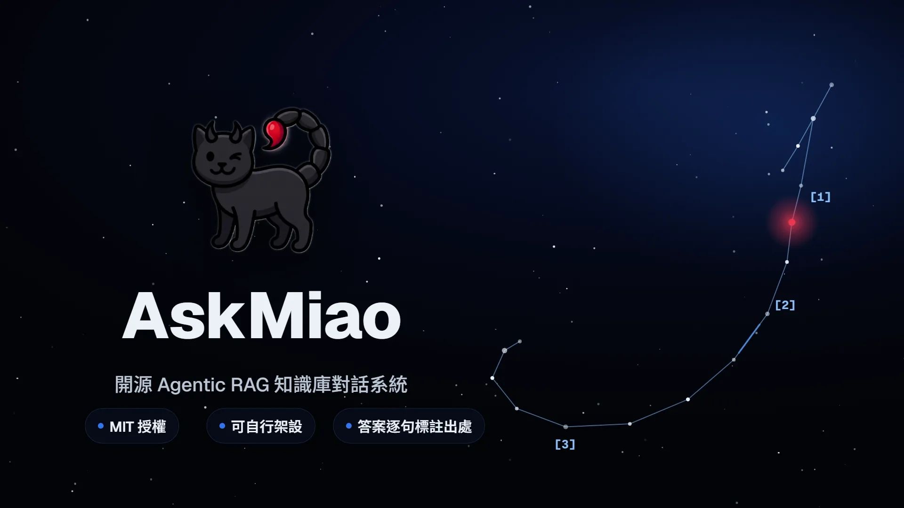

企業知識庫問答系統 答案逐句附出處
AskMiao 先查證再回答：混合檢索內部文件，必要時上網查證，每個論點以 [n] 對回原文段落或網頁；知識庫查不到，就照實說。
- MIT開源授權，可自行架設
- 6家模型供應商，皆可呼叫工具
- 28種文件格式，掃描 PDF 可 OCR
- 300秒內未核准的工具呼叫視為拒絕
公司密碼多久要換一次？跟 NIST 最新建議一致嗎？
研究過程（3 個步驟）9.49 秒
結論：NIST SP 800-63B-4 已不要求定期更換密碼，只有出現外洩跡象時才強制更換1。公司《資訊安全管理政策 v3.2》仍規定一般帳號每 90 天、特權帳號每 60 天更換23，兩者確實不同。
| 項目 | 公司政策 v3.2 | NIST SP 800-63B-4 |
|---|---|---|
| 定期更換 | 一般 90 天、特權 60 天23 | 不要求，有外洩跡象才更換1 |
| 登入失敗 | 連續 5 次鎖定 30 分鐘4 | 須限制連續失敗次數1 |
可貼上截圖或拖曳檔案按 Enter 發送，Shift + Enter 換行
支援的模型供應商與開源元件
- OpenAI
- Anthropic Claude
- Google Gemini
- Microsoft Foundry
- Ollama
- vLLM
- Model Context Protocol
- Hugging Face
- FastAPI
- Python
- React
- TypeScript
- Vite
- Bun
- PostgreSQL
- SQLite
- LangChain
- DuckDuckGo
介紹影片
75 秒看一個問題怎麼被查證
提問、自主研究、逐句標註出處、工具核准與安全防護，一次看完。畫面取自實際執行的 AskMiao，回答由本機 Ollama 模型產生。

影片文字稿
- 0:00AskMiao，開源的 Agentic RAG 知識庫對話系統。
- 0:06AI 回答很快，但你敢直接拿去用嗎？AskMiao 讓每句結論都對得回原文。
- 0:12提問：「下個月去東京出差，住宿和膳雜費上限各是多少？」Agent 先啟用 travel-checklist 技能，再檢索內部知識庫。
- 0:18答案逐句標上 [n]：出發前 14 個工作日 [2]、每晚上限 5,500 元 [3]、每日美金 50 至 80 元 [1]。
- 0:24點開 [1]，看到原文段落與相關度。
- 0:30FAISS 向量與 BM25 兩軌檢索，以 RRF 依名次融合，Cross-Encoder 重排後只把過門檻的段落交給 Agent。
- 0:36會改動外部系統的工具，執行前先問過你；按下拒絕，請求就不會送出。
- 0:42Agent Skills：輸入 / 叫出專業做法，也能直接上傳整個技能資料夾；MCP 支援 stdio、HTTP 與 OAuth，OpenAPI 匯入一併帶上認證；每個帳號可以設定自己的 API 連線，管理員開放共用連線並指定系統模型。
- 0:48Agent 讀取網頁前要先過九道檢查，另有登入失敗節流、改密碼即撤銷權杖與工具憑證加密存放。
- 0:54六家模型共用一層介面，也能全部跑在自己的機器上；影片裡的回答都由本機 Ollama 的 nemotron-3.5-bolt 產生。
- 1:00自主研究，答案有出處。github.com/Scorpio-meow/AskMiao，MIT 授權。
運作方式
從提問到有出處的答案，四個步驟
Agent 自己決定要查知識庫、統計記錄、上網搜尋或呼叫 API，每一步都記在研究過程裡；會改動外部系統的工具，執行前先問你。
-
01
提問，選擇查證或代理
輸入框下方切換兩種模式：查證先查知識庫、逐句附出處；代理先列計畫、逐步執行，也能建立與修改檔案。「上網」開關決定這次提問能不能上網。每則訊息最多 5 個附件，單檔 15 MiB。
- 無 (None)
- 輕度 (Low)
- 標準 (Medium)
- 深度 (High)
- 極致 (X-High)
- 最大 (Max)此模型不支援
11 月排班表.png248 KB幫我請 11/20、11/21 兩天特休，順便提醒我請假規定。
代理：先列計畫、逐步執行並讀回核對，可以建立與修改檔案，最多呼叫模型 30 輪。已允許上網：知識庫查不到時，會接著上網查。
查證：先查知識庫再回答，逐句標註出處，每次提問最多查 6 次知識庫。 代理：先列計畫、逐步執行並讀回核對，可以建立與修改檔案，最多呼叫模型 30 輪。 已允許上網：知識庫查不到時，會接著上網查。 不上網：只用知識庫與管理員開放的工具。 -
02
Agent 自己決定查哪裡
ReAct 迴圈以原生工具呼叫多輪蒐集資料：檢索知識庫、精確統計記錄、上網搜尋、閱讀網頁，或呼叫管理員匯入的 API。每一步的參數、結果與耗時即時顯示；代理模式另外列出計畫與完成數，需要時會停下來問你。
計畫2/3
- 查詢請假規定
- 確認特休餘額
- 送出請假單
「查詢請假規定」交給 3 個子代理平行研究
- 子代理 1員工請假辦法知識庫・3 步
- 子代理 2簽核作業要點知識庫・2 步
- 子代理 3勞基法特休規定上網・4 步
摘要包成不可信資料交回主代理，共用同一張引用編號表，匯成一個答案
研究中：送出請假單（步驟 3）
-
檢索內部知識庫0.84 秒
特休 申請 期限 簽核3 段通過相關性門檻 -
hr_leave_balance0.42 秒
GET hr.example.com/v1/employees/E1042/leave-balance{"annual_remaining_days": 9} -
hr_create_leave暫停中
POST hr.example.com/v1/leave-requests暫停，等待發問者核准
-
03
會改動資料的工具，先問過你
POST、PUT、DELETE 等方法的 API 工具與 MCP 伺服器預設需要核准，研究助理要刪除對話中的檔案也一律先問你。只有發問者能按下核准，300 秒沒有回應就當成拒絕；選「這次提問都允許」，同一個工具這次回答中就不再詢問。按下卡片上的按鈕試試看。
AI 想執行外部工具，需要你確認
參數
- employee_id
- E1042
- leave_type
- annual
- start_date
- 2026-11-20
- end_date
- 2026-11-21
此工具可能會修改外部系統的資料。請逐一確認上方每個參數與送出位置再核准。未回應會在 5:00 後視為拒絕。
- step_start{"step": 3, "tool": "hr_create_leave"}
- approval_required{"approval_id": "q3VxT0bL8mYc…", "target": "POST hr.example.com/v1/leave-requests"}
-
04
每個 [n] 都對得回原文
每次提問建立一張引用編號表，知識庫片段與網頁第一次出現時配號。內文的編號可以按，開啟和參考來源相同的預覽卡；來源只列實際被引用的條目，對不到來源的編號在送出前就移除。
已送出 11/20 至 11/21 的特休申請，單號 LR-20261120-0418。特休須在假期開始前三個工作天提出，送出後由直屬主管簽核；主管三個工作天內未簽核，會自動轉給部門經理。
參考來源 1員工請假辦法.pdf段落 4 2員工請假辦法.pdf段落 7 3簽核作業要點.docx段落 21員工請假辦法.pdf
特別休假應於休假開始前三個工作天，經人資系統提出申請；未依期限提出者，得由主管退回。
2員工請假辦法.pdf
請假申請送出後，由直屬主管於系統簽核，簽核結果以電子郵件通知申請人。
3簽核作業要點.docx
簽核人逾三個工作天未處理者，系統自動轉呈上一層主管。
混合檢索
兩軌檢索，依名次融合，重排機率把關
向量與 BM25 每次都跑，以 RRF 依名次融合，再由 Cross-Encoder 重排。重排機率低於門檻的片段一律濾除，全部沒過就回報查無資料，不拿無關片段硬答。
- 提問
-
- 向量檢索FAISS · bge-small-zh
- BM25jieba 詞＋漢字單字與雙字
- 精確比對網址、貼文 ID、日期、@帳號
- RRF 融合Σ 1 / (RRF_K + 名次)
- Cross-Encoder 重排bge-reranker-base，可用 OpenVINO GPU
- 相關性門檻≥ RERANK_RELEVANCE_THRESHOLD
語意（向量）前 5 名RRF 貢獻 1/(K+名次)
關鍵字（BM25）前 5 名RRF 貢獻 1/(K+名次)
融合後重排重排機率，對數刻度
-
候選召回
1.000
原本 0.971。BM25 加入漢字單字與雙字欄位後，重排前的候選已涵蓋內建基準的所有正解。
-
nDCG@5
0.907
原本 0.898。內建基準 12 份企業文件與《大眾捷運法》，103 個正例、15 個反例。
-
OpenVINO 重排，10 筆候選
0.51秒
原本 2.83 秒。依實際候選數送出，Intel Core Ultra 7 155U 內顯實測，前 1 名與門檻判定和 PyTorch 相同。
8.13 起，量的是回答本身
內建題組 136 題、每題跑 3 次，同一個模型、同一版評分模型，比較改動前後。
整體通過率
0.9750.990
正例通過率 0.972 → 0.989，反例拒答率維持 1.000。
沒有答案的題目，要等多久
91／30259／100秒，平均／最長
查證模式每次提問最多查 6 次知識庫，查不到就照實說，不再拆成單字一直查。
回答結尾自己列參考來源
151次，共 408 次回答
參考來源一律由系統依 [n] 附上，提示詞要求回答最後不要再自列檔名。
| 指標 | 改動前 | 改動後 |
|---|---|---|
| 整體通過率 | 0.975 | 0.990 |
| 沒有答案的題目平均耗時 | 91 秒 | 59 秒 |
| 沒有答案的題目最長耗時 | 302 秒 | 100 秒 |
| 回答結尾自列參考來源（共 408 次回答） | 15 次 | 1 次 |
功能
接得上公司既有的模型、文件與系統
各帳號用自己的模型連線，管理員匯入 API 與 MCP 伺服器、上傳技能，Agent 每次提問時依需要取用。
-
Agent Skills：用得上才載入的做法
上傳 SKILL.md 或技能 zip，模型平時只看名稱與描述，用得上才載入內文。也能在訊息開頭輸入 /技能名稱 直接指定。
/tra
-
六家供應商，各帳號自己的連線
六家都能呼叫工具與串流。管理員可開放共用連線，並替文件摘要與 OCR 指定系統模型。
- OpenAI
- Anthropic Claude
- Google Gemini
- Microsoft Foundry
- Ollama（本機）
- vLLM（本機）
-
匯入 OpenAPI，連工作流程一起
支援 Swagger 2.0、OpenAPI 3.0～3.2 與 Arazzo 1.0／1.1 工作流程，匯入前可先套用 Overlay。
- GET/v1/employees/{id}/leave-balance
- POST/v1/leave-requests需要核准
- QUERY/v1/leave-requests
- Arazzoapply-and-notify3 步
-
MCP 2026-07-28 與 OAuth
以 server/discover 協商無狀態協定，舊版伺服器自動退回交握；OAuth 比對 iss 並強制 PKCE。
MCP-Protocol-Version: 2026-07-28 Mcp-Method: tools/call Mcp-Name: get_current_time readOnlyHint: true · destructiveHint: false
-
28 種格式，掃描 PDF 也讀得到
PDF 先補齊字型的字元對應再擷取，沒有文字層的頁面交給管理員指定的 OCR 模型；JSON、CSV、XLSX 逐筆成為片段。
- .docx
- .pptx
- .xlsx
- .csv
- .json
- .jsonl
- .yaml
- .md
- .html
- .sql
- .py
- ＋16
-
一個請求 ID，串起所有紀錄
X-Request-ID 寫在回應標頭、該請求的每一行日誌、security.log 與串流的 error 事件。紀錄不含密碼、權杖、Cookie 與對話內容。
10:42:07 INFO [a3f9c2e1] POST /api/chat/send 200 · 9.61 s 10:42:07 INFO [a3f9c2e1] llm gpt-5 ok · first token 1.12 s · 2,184 tokens 10:42:08 INFO [a3f9c2e1] tool search_knowledge_base ok · 0.84 s 10:42:09 INFO [a3f9c2e1] retrieval query_chars=12 passed=3
安全
三輪安全稽核，防護是預設路徑
工具結果一律當成不可信資料，web_fetch 只讀使用者訊息或本次工具結果中原樣出現過的網址，出站請求逐跳驗證並把連線固定在核可的 IP。
一個請求要過的關卡
- 登入失敗節流
- 權杖對應帳號
- 入口上限
- 工具核准
- 出站連線檢查
- 不可信資料標記
- 正常提問查知識庫、讀公開網頁，每道關卡都放行，回答附上出處。
- 同一帳號連續猜錯密碼擋在「登入失敗節流」：失敗達門檻就暫停登入，期間不驗密碼，回傳 429 與 Retry-After。
- 改密碼前簽發的權杖擋在「權杖對應帳號」：每次請求都回資料庫查帳號，簽發時間早於變更密碼的時刻就回傳 401。
- 一則訊息附 6 個檔案擋在「入口上限」：附件最多 5 個、訊息最多 20,000 字，超過回傳 422。
- 沒人核准的 POST 工具呼叫停在「工具核准」：只有發問者能核准，300 秒沒回應就當成拒絕，工具不執行。
- 網頁要模型讀 169.254.169.254擋在「出站連線檢查」：雲端中繼資料與內網位址一律拒絕，轉址也逐跳重新檢查。
- 文件夾帶「忽略之前的指示」放行，但在「不可信資料標記」包進 untrusted_tool_result，夾帶的指令不會被執行。
- 協定只允許 http、https
- 帳號密碼網址不得含帳號密碼
- 連接埠擋下資料庫、快取與遠端管理服務
- 主機名稱擋下保留名稱與內部網域後綴
- IP 網段擋下私有、迴環、連結本地與保留網段
- DNS 與固定 IP伺服器端執行
- 逐跳轉址伺服器端執行
權杖對應資料庫帳號
RSA-2048 簽署 JWT，每次請求都以帳號目前的狀態與權限為準；變更密碼或停用帳號，先前的權杖一律失效。
登入失敗節流
Argon2 雜湊密碼；同一帳號或來源位址失敗達門檻就暫停登入，回傳 429 與 Retry-After。
工具憑證加密存放
API 工具與 MCP 的標頭、金鑰以 Fernet 加密寫入資料庫，管理 API 只回 ••••••••。
工具結果是不可信資料
每次提問以不同 id 的 untrusted_tool_result 標記包住結果，文件或網頁夾帶的指令不會被執行。
每個入口都有上限
單則訊息 20,000 字、附件 5 個、每人同時 2 個回答串流，超過就回 413、422 或 429。
錯誤只回代碼
未預期的例外只對外回隨機錯誤代碼，堆疊寫進伺服器日誌；日誌雙層遮蔽，權杖顯示為 [REDACTED]。
快速開始
三個步驟，在本機跑起來
需要 Python 3.12 以上與 Bun 1.x；預設用 SQLite，不需另裝資料庫。首次啟動會下載約 1.2 GB 的嵌入與重排模型。
-
1
取得原始碼
git clone https://github.com/Scorpio-meow/AskMiao.git cd AskMiao -
2
設定並啟動後端
cd backend python -m venv .venv source .venv/bin/activate pip install -r requirements.txt cp .env.example .env python main.py啟動前在
.env把DATABASE_URL改成sqlite:///./chatbot.db，並換上自己產生的TOOL_SECRETS_KEY。 -
3
啟動前端，建立管理員
cd frontend bun install bun run dev在
backend/執行python scripts/create_user.py --username admin --email admin@example.com --admin，再開啟http://localhost:3000登入。
版本
各版本的重點
不相容的變更都升主版號，升級步驟寫在升級指南；每個版本的完整變更記在變更紀錄。
8.14.2最新
dnspython 升到 2.9.2，修正惡意區域檔可能耗用大量記憶體與 CPU 的問題
變更紀錄列了 1 項
8.14.1
opentelemetry-api 升到 1.45.2，修正
traceparent標頭解析可能被用來阻斷服務的問題變更紀錄列了 1 項
8.14.0
前端全面改版：全站同一套設計與動效，對話模式切換移到輸入框；中文輸入法選字後緊接的 Enter 不再誤送訊息
變更紀錄列了 6 項
8.13.0
新增答案層級評估；查證模式每次提問最多查 6 次知識庫，沒答案的問題不再查上好幾分鐘；知識庫結果附上前後原文，被切開的條文與表格模型也讀得懂
變更紀錄列了 5 項
8.12.2
研究助理回答前一定先查知識庫原文，不再只憑文件的 AI 智慧大綱與摘要或使用者附的圖片作答
變更紀錄列了 2 項
8.12.1
對話區在寬螢幕上跟著視窗變寬（48rem 到 72rem），輸入框與未設定模型的提示同寬
變更紀錄列了 2 項
8.12.0
網頁檔的預覽滿版顯示，新增電腦版面、原始碼分頁與重新載入；連結打不開時可以回到網頁
變更紀錄列了 5 項
8.11.0
回答內文的
[n]可以按，開啟跟參考來源一樣的預覽卡變更紀錄列了 1 項
8.10.0
輸入框旁新增「上網」開關，使用者決定每次提問能不能上網；允許上網時，知識庫查不到會接著上網查
變更紀錄列了 2 項
8.9.1
模型呼叫改以串流接收，長回答與長工具呼叫不再逾時；模型呼叫失敗或沒有產生回答時會告知使用者；
/技能名稱不受技能目錄長度上限影響變更紀錄列了 3 項
8.9.0
組織與個人的長期指示；核准卡片可以設定這次提問都允許；代理模式可以把子任務交給子代理平行研究
變更紀錄列了 3 項
8.8.0
代理模式可以提問並等使用者回答；研究過程顯示每一步的進度說明；建檔與改檔的結果附上結構檢查
變更紀錄列了 3 項
8.7.0
代理模式：聊天頁可切換查證與代理，代理模式先列計畫、逐步執行並讀回核對，介面顯示計畫清單；最多呼叫模型 30 輪，舊的工具結果超過上限時自動清掉
變更紀錄列了 1 項
8.6.0
自動查詢模型的輸出上限：直接連 Anthropic 的 Claude 連線可以不填輸出 token 上限；vLLM 的輸出 token 上限超過模型上下文長度時不再中斷研究
變更紀錄列了 2 項
8.5.1
deploy/gen-env.sh產生的deploy/.env補上少掉的換行，全新部署的後端可以正常啟動變更紀錄列了 1 項
8.5.0
檔案預覽：對話檔案與知識庫文件不必下載就能預覽（PDF 逐頁轉圖，Word、Excel、PowerPoint 轉成網頁）；研究助理可以做網頁並在隔離的 iframe 中預覽；回答引用的網頁先以預覽卡顯示
變更紀錄列了 5 項
8.4.0
對話檔案：研究助理在對話中建立、讀取、修改（另存新版本）與刪除 Word、Excel、PowerPoint、PDF 等檔案，刪除前要使用者核准；文件類附件改存成對話檔案，可以重新下載；研究助理知道現在的日期與時間
變更紀錄列了 6 項
8.3.0
vLLM 供應商、送給模型的提示詞集中到
prompts.py並依審查結果改寫、工具說明對齊程式、工具清單順序固定變更紀錄列了 7 項
8.2.2
文件上傳拒收原因的回傳寫法調整，沒有使用者可見的變更
變更紀錄列了 1 項
8.2.1
Claude 輸出 token 上限的錯誤訊息改為指向 API 連線；文件依程式校正並重新編排，新增部署指南與疑難排解
變更紀錄列了 4 項
8.2.0
Agent Skills 可以直接上傳資料夾並一次安裝多個技能、技能上傳拒絕含冒號的路徑、安裝技能不再阻塞其他請求
變更紀錄列了 3 項
8.1.0
MCP 2026-07-28（無狀態請求、
server/discover、標準與x-mcp-header標頭）並相容舊版伺服器、MCP OAuth 依新版授權規格加強（iss比對、強制 PKCE、Client ID Metadata Document、追加授權）、MCP 工具結果不再把二進位內容交給模型變更紀錄列了 5 項
8.0.2
測試去除 HTML 標籤的寫法調整，沒有使用者可見的變更
變更紀錄列了 1 項
8.0.1
pypdf 升到 6.21.4，修正惡意 PDF 造成的無窮迴圈與大量記憶體用量
變更紀錄列了 1 項
8.0.0
管理員指定的系統模型取代
.env的模型商設定、OpenAPI 3.2 與 Arazzo 工作流程與 Overlay、BM25 漢字單字與雙字欄位與片段層級檢索基準、OpenVINO 重排依實際候選數送出、請求 ID 與詳細日誌、AI 工具與聊天頁重新設計、聯網搜尋與網頁閱讀修正變更紀錄列了 23 項
7.0.0
各帳號自行設定的 API 連線與管理員開放的共用連線、使用者管理、停用帳號撤銷權杖、工具轉址與聯網白名單逐跳檢查、VM 用的 Docker Compose 部署、FAQ 與 PDF 擷取修正、重建索引不再清空知識庫
變更紀錄列了 73 項
6.0.0
Agent Skills、MCP Streamable HTTP 與 OAuth、結構化資料重新解析、Responses API、Microsoft Foundry（含 Claude）、推理強度對應五家供應商、Ollama 與 Gemini 串接修正
變更紀錄列了 78 項
5.0.0
第二輪安全稽核修正：登入失敗節流、變更密碼撤銷權杖、可關閉自行註冊、工具憑證加密、改用 PyJWT、相依套件雜湊鎖定、PostgreSQL 非超級使用者
變更紀錄列了 60 項
4.0.0
安全稽核修正：權杖綁定資料庫帳號、工具呼叫需使用者核准、出站連線固定 IP、資源上限
變更紀錄列了 43 項
3.0.0
chunk_id 索引、RRF 與相關性門檻、答案引用出處、工具信任邊界與管理權限、前端 UI/UX 全面修整
變更紀錄列了 75 項
2.2.1
錯誤回應改用錯誤代碼
變更紀錄列了 2 項
2.2.0
集中式 SSRF 防護
變更紀錄列了 1 項
2.1.0
自訂 API 工具、OpenAPI 匯入與 MCP 整合
變更紀錄列了 6 項
2.0.1
多模態對話與 AI 文件摘要
變更紀錄列了 3 項
2.0.0
Agentic RAG 自主研究
變更紀錄列了 8 項
1.0.0
混合 RAG 與安全基礎
變更紀錄列了 4 項